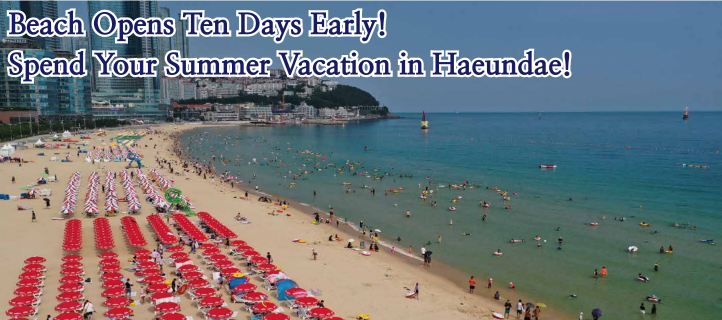
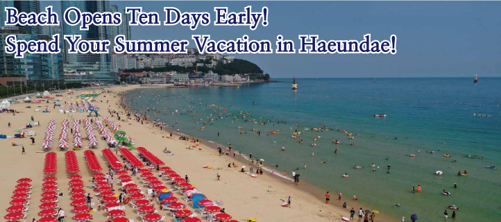
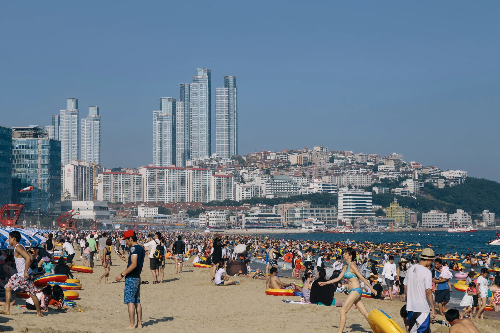
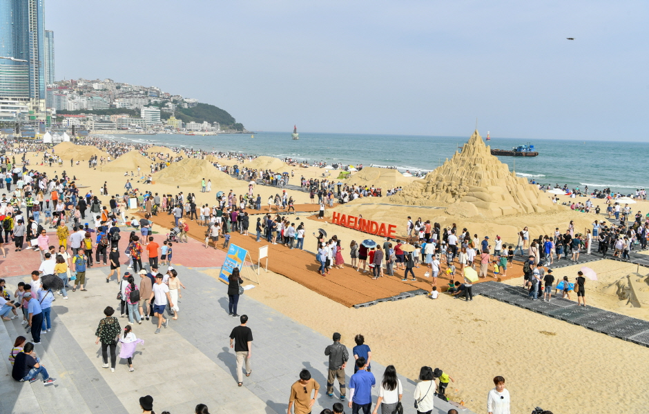
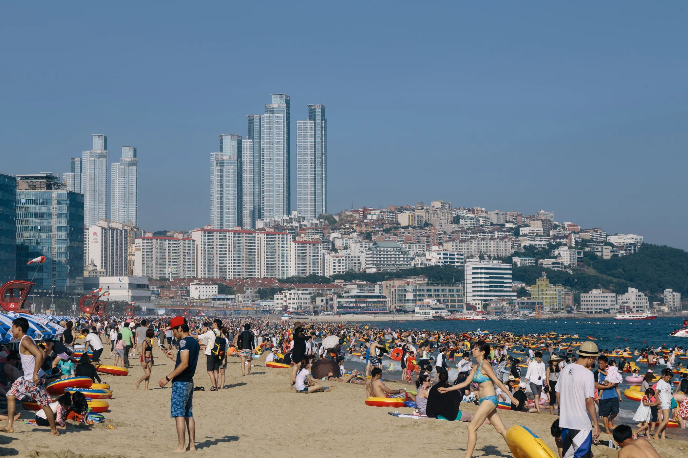
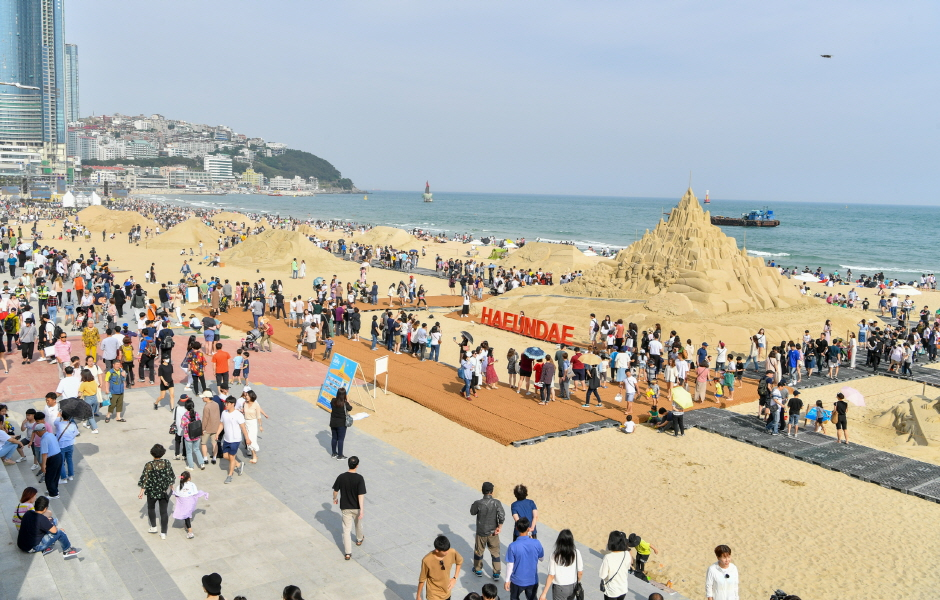
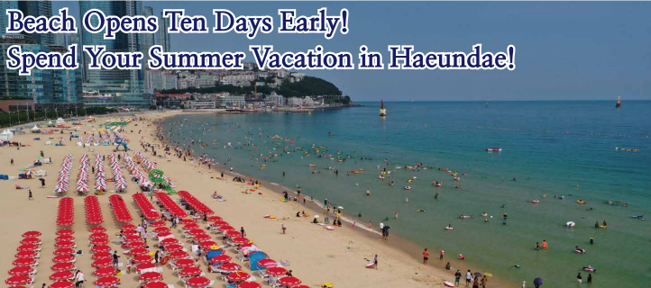
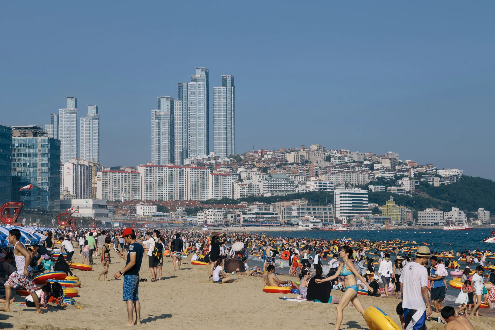
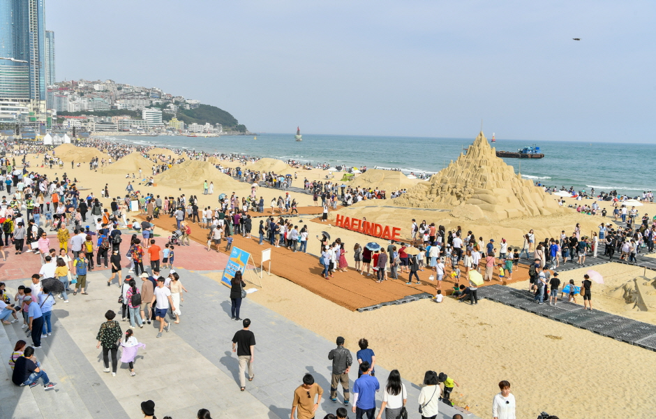

 



Haeundae Beach is the kind of place that instantly makes you feel like you’re on a mini vacation, even if you’re just visiting for a few hours. It’s Busan’s most iconic beach, known for its wide stretch of soft golden sand and calm blue waves that look especially beautiful during sunrise and sunset. In the summer, the beach becomes full of life—families building sandcastles, friends playing in the water, tourists taking pictures, and street performers adding energy to the atmosphere. The area around Haeundae is just as charming. You can walk through the lively Haeundae Market to try local snacks, visit the Busan Aquarium, or head to The Bay 101 at night to enjoy the stunning city lights reflecting on the water. Cafés, seafood restaurants, and cozy bars line the streets, giving you plenty of options to relax. Whether you’re there to swim, take a peaceful walk along the shore, or simply soak in the city’s beach culture, Haeundae Beach has a warm and welcoming vibe that makes every visit feel special.
Haeundae Beach isn’t just a beach—it’s one of Busan’s most famous landmarks and a place where the city’s energy truly comes alive. The beach is wide, clean, and beautifully maintained, with soft sand and gentle waves that make it perfect for swimming, relaxing, or simply walking barefoot along the shoreline. But what makes Haeundae truly special is everything surrounding it. Just a few minutes away, you’ll find the Haeundae Traditional Market, a must-visit spot for trying local snacks like tteokbokki, twigim, and fresh seafood. Another major attraction is the Busan Sea Life Aquarium, one of Korea’s largest, where visitors can walk through a glass tunnel surrounded by sharks, rays, and colorful fish. For breathtaking ocean views, people often head to Dongbaekseom Island, a small coastal forest park connected to the beach. It’s home to the famous APEC House and offers peaceful trails with views of the Gwangan Bridge.
In the evenings, the area transforms again. The
Bay 101, with its lit-up marina and modern buildings, becomes a perfect
night-photo spot. Nearby skyscrapers like Haeundae LCT add a stunning
city skyline right next to the sea. For culture lovers, the Haeundae
Blueline Park—a coastal train that travels between Haeundae, Cheongsapo,
and Songjeong—offers one of the most scenic rides in Busan.
Throughout
the year, Haeundae also hosts major events such as the Busan
International Film Festival, Haeundae Sand Festival, and seasonal light
shows that attract visitors from all over Korea and abroad. With its mix
of nature, city life, culture, food, and entertainment, Haeundae Beach
is more than just a travel spot—it’s a complete Busan experience that
leaves every traveler with unforgettable memories.


